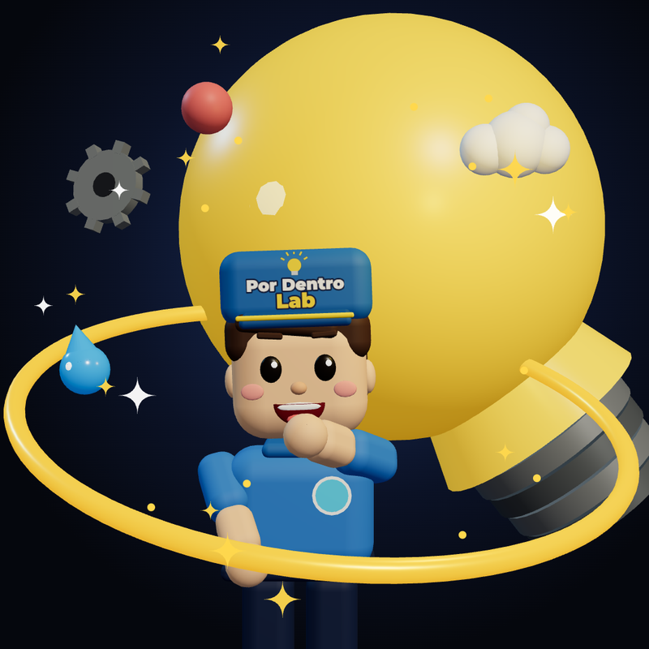
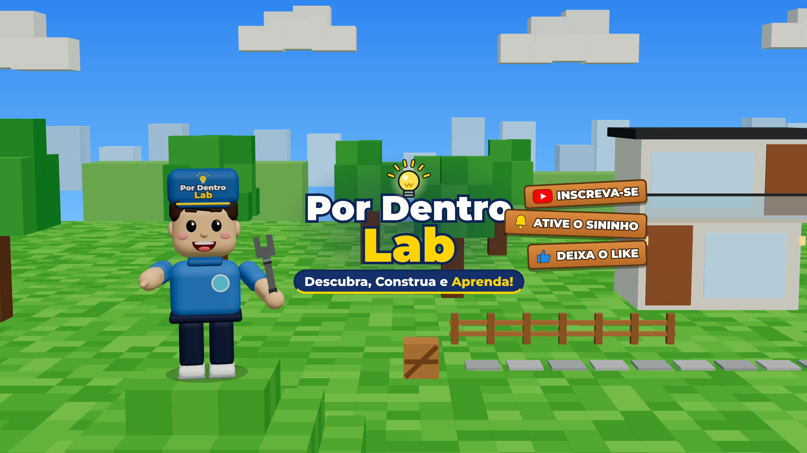

YouTube Shorts · TikTok · Instagram Reels
Quem rola o feed decide em 1 ou 2 segundos se fica. O canal precisa ser reconhecido de cara: uma pergunta curiosa + uma imagem em raio-x 3D que ninguém mais faz.
"A gente abre as coisas pra você ver como funcionam por dentro, em menos de 2 minutos."
Slogan curto: A gente abre. Você entende.
| Quem é | O que quer | O que afasta |
|---|---|---|
| Adultos de 18 a 50 anos, curiosos, sem formação técnica. Assistem no celular, no intervalo, no ônibus, antes de dormir. | Uma resposta rápida e surpreendente para algo que já se perguntaram. Um número que dá para contar para alguém ("mais que um botijão de gás!"). | Introdução longa, termo técnico sem explicação, voz monótona, texto pequeno, clickbait que não entrega. |
| Pilar | Exemplos |
|---|---|
| 🫀 Corpo no limite | Piloto de F1, astronauta, mergulhador, maratonista, 24 h sem dormir. |
| ⚙️ Máquinas por dentro | Freio de carro, elevador, avião, geladeira, bateria de celular. |
| ❓ Por que é assim? | Curiosidades do dia a dia explicadas com raio-x. |
Por Dentro Lab, o mesmo que já aparece no fim do vídeo da F1 ("segue o Por Dentro Lab").
Use o mesmo @ nas três plataformas, para a pessoa achar você em qualquer uma. Ordem de preferência:
Evite números no @ (como "01"): parece conta reserva e é difícil de falar em voz alta no fim do vídeo.
Reserve o @ nas três plataformas no mesmo dia, mesmo que ainda não vá postar em todas, para ninguém pegar antes.
Já se perguntou como as coisas funcionam por dentro? Aqui a gente abre tudo em raio-x 3D e explica em menos de 2 minutos, sem enrolação e sem palavra difícil. 🫀 Corpo no limite: pilotos, atletas, astronautas e o que acontece com o seu corpo. ⚙️ Por dentro das máquinas: carro, avião, elevador, geladeira, celular. ❓ Por que é assim? Curiosidades do dia a dia explicadas do jeito mais simples possível. Toda semana tem vídeo novo. Comenta qual coisa você quer ver por dentro: os próximos temas saem dos comentários. 📩 Parcerias: [seu e-mail comercial]
Troque "[seu e-mail comercial]" por um e-mail só para parcerias (ex.: contato.pordentrolab@...). Não use o e-mail pessoal.
Abrimos as coisas pra você ver por dentro 🔬 Curiosidades em raio-x 3D
🔬 Curiosidades em raio-x 3D 🫀 Corpo no limite · ⚙️ Máquinas por dentro ❓ Comenta o que você quer ver por dentro 👇 Vídeos novos toda semana
Algumas plataformas contam emoji como 2 caracteres; as bios acima têm folga para isso.
curiosidades, como funciona, por dentro, raio-x, ciência, corpo humano, explicação, animação 3D, você sabia, fórmula 1
As cores e a fonte são as mesmas do vídeo da F1, para o canal e os vídeos parecerem uma coisa só.
Fonte: Montserrat ExtraBold/Black (títulos e legendas), com contorno escuro para ler em qualquer fundo.

| Arquivo | Tamanho | Onde usar |
|---|---|---|
canal/arte/avatar.png | 800×800 px | Foto de perfil no YouTube, TikTok e Instagram (as três cortam em círculo; o desenho já fica no centro). |
canal/arte/banner.png | 2560×1440 px | Banner do YouTube. Todo o texto está dentro da área que aparece no celular (1546×423 px no centro). |
Para mudar texto ou cor: edite canal/arte/avatar.html ou banner.html e rode node canal/arte/gerar_arte.mjs.
Entre em studio.youtube.com pelo computador (algumas opções não aparecem no app). Os nomes dos menus podem mudar um pouco com o tempo.
avatar.pngbanner.png (confira a prévia de celular, TV e computador)O Programa de Parcerias do YouTube para quem faz Shorts pede, hoje, 1.000 inscritos + 10 milhões de visualizações válidas de Shorts em 90 dias para dividir receita de anúncios. Existe um nível inicial (500 inscritos, 3 envios em 90 dias e 3 milhões de visualizações de Shorts) que libera recursos como Super Thanks e Clube de canais. Confira os números atuais em Ganhar dinheiro no YouTube Studio, porque eles mudam.
Suba o arquivo MP4 original (out/piloto-f1.mp4) em cada plataforma. Nunca baixe o vídeo do TikTok com a marca d'água para postar no Instagram ou no YouTube: as plataformas entregam menos vídeos com marca d'água de outro app.
Baseada no vídeo da F1, que já segue esse caminho:
| Tempo | O que acontece | Exemplo (F1) |
|---|---|---|
| 0–2 s Gancho | Pergunta curiosa + imagem forte já no 1º quadro. Nada de "olá, pessoal". | "Por que o piloto de F1 parece só ficar sentado?" com a tela tremendo. |
| 2–10 s Entrada | A câmera "entra" na coisa (raio-x). É a marca registrada do canal. | "Bora entrar": o carro vira raio-x. |
| Meio Problema → solução | Cada parte: selo vermelho (problema), número comparado com algo do dia a dia, selo verde (solução). | "Mais de 30 quilos: mais que um botijão de gás" → "elástico + capacete pesado". |
| Final Revelação | Junta tudo numa frase de efeito. | "Pescoço de mola, coração de maratonista e perna de aço." |
| Últimos 5–8 s Chamada | Uma pergunta que dá vontade de responder + "segue o Por Dentro Lab". | "Teria coragem de treinar assim? Comenta aí." |
Evite título que promete o que o vídeo não mostra: as pessoas deslizam para o próximo e o algoritmo para de mostrar o vídeo.
[Pergunta do vídeo] A gente abriu e mostrou em raio-x 3D. Comenta: qual coisa você quer ver por dentro no próximo vídeo? Fontes: - [link 1] - [link 2] #curiosidades #comofunciona #pordentrolab
De 3 a 5 por vídeo: 2 fixas (#curiosidades #pordentrolab) + 1 a 3 do tema (ex.: #formula1 #F1 #corpohumano). Mais do que isso não ajuda e parece spam.
Título: Por que o piloto de F1 parece só ficar sentado? 🏎️ Descrição: Pescoço aguentando mais de 30 kg, coração a 170 por quase 2 horas e até 4 kg de suor numa corrida. A gente abriu o piloto em raio-x 3D. Comenta: você teria coragem de treinar assim? Fontes: - Formula1.com: como treinar como um piloto de F1 - ScienceABC: efeitos físicos da F1 nos pilotos #curiosidades #formula1 #F1 #corpohumano #pordentrolab
Comece com 2 vídeos por semana, sempre nos mesmos dias (ex.: terça e sexta). Constância vale mais que volume: os vídeos em 3D dão trabalho, e um ritmo que você consegue manter por 3 meses é melhor que 5 por semana durante 2 semanas. Quando a produção estiver ágil, suba para 3.
12h–13h (almoço) ou 19h–21h (depois do trabalho). Teste os dois por 4 semanas e fique com o que der mais visualizações nas primeiras 24 h.
Todas seguem a mesma fórmula (pergunta → raio-x → problema/solução → número comparado → pergunta final). Confira os números com fontes antes de roteirizar.
| # | Título | Pilar |
|---|---|---|
| 1 | Por que o piloto de F1 parece só ficar sentado? (pronto) | 🫀 Corpo |
| 2 | O que acontece com o corpo de um astronauta no espaço? | 🫀 Corpo |
| 3 | O que acontece com seu corpo depois de 24 h sem dormir? | 🫀 Corpo |
| 4 | Por que o maratonista "quebra" perto do km 30? | 🫀 Corpo |
| 5 | Como um mergulhador aguenta minutos sem respirar? | 🫀 Corpo |
| 6 | Como o freio para um carro de 1 tonelada? | ⚙️ Máquinas |
| 7 | Por que o elevador não despenca se o cabo arrebentar? | ⚙️ Máquinas |
| 8 | Como a geladeira esfria sem gelo nenhum dentro? | ⚙️ Máquinas |
| 9 | O que tem dentro da bateria do seu celular? | ⚙️ Máquinas |
| 10 | Por que o avião consegue planar se o motor parar? | ❓ Por que é assim? |
O personagem de capacete pode virar o "apresentador" fixo do canal e aparecer em todos os vídeos. Isso ajuda as pessoas a reconhecerem o canal no meio do feed.
| Métrica | Onde ver | O que diz |
|---|---|---|
| Visualizado vs. deslizado | YouTube Studio → vídeo → Análise | Se o gancho funciona. Se muita gente desliza, melhore os 2 primeiros segundos. |
| Retenção / % assistido | YouTube, TikTok e Instagram | Onde as pessoas desistem. Encurte ou acelere esse trecho no próximo vídeo. |
| Compartilhamentos e salvamentos | TikTok e Instagram | O sinal mais forte de que o conteúdo é bom. Esses temas merecem continuação. |
| Inscritos / seguidores por vídeo | As três | Quais temas trazem gente nova para o canal. |
| Comentários | As três | Fonte de ideias para os próximos vídeos. |
Revise uma vez por semana, não todo dia. Compare o vídeo com a média dos seus outros vídeos, não com canais grandes.